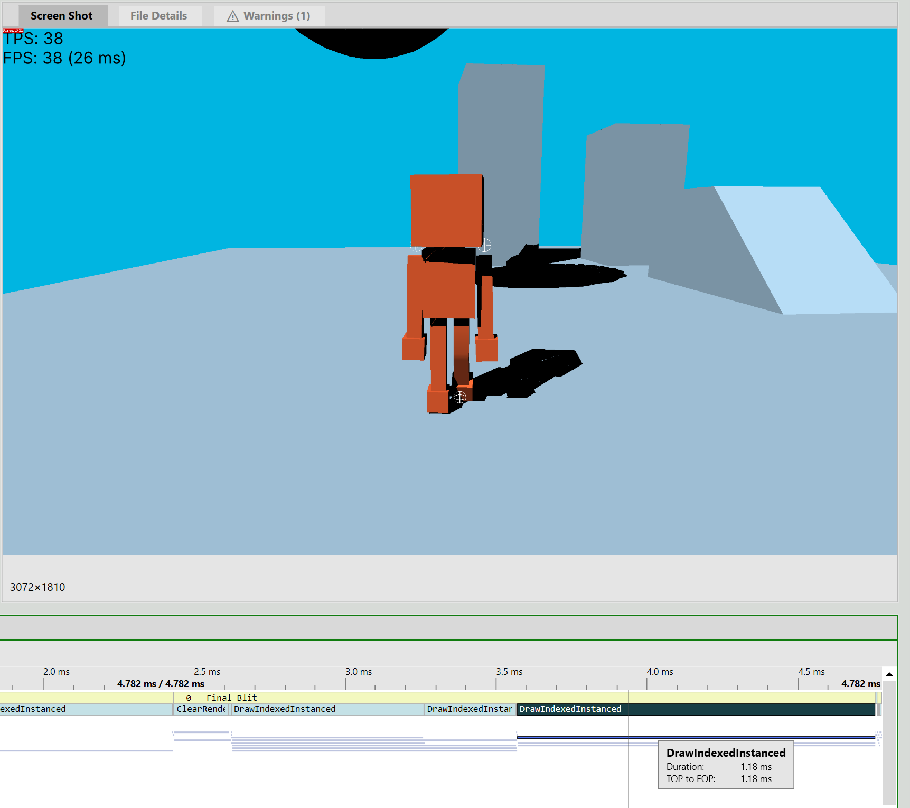

Why don't you see for yourself :)
We have shadows! But there are still some issues to resolve
After weeks and two separate GPU debuggers later, the shadow algorithm correctly generates pixel-perfect shadows given a static or animated mesh! However, there are a few important issues to resolve:
When the camera enters a shadow volume, that volume stops working (see in the video).
The implementation can only handle 1 light (this should be fairly trivial to fix)
It wastes cycles in the vertex shader doing unnecessary repeated work
The overlapping volumes create a lot of overdraw which quickly becomes a performance bottleneck as the polygon count increases
Soft edges?
The reason issue #1 happens is because the engine only calculates fragments for the front side of the volumes. If the camera goes inside a volume, this stops happening.
It may be possible to cap the positioning of the volume vertices such that the caps never end up behind the camera, thus ensuring a volume always has fragment invocations.
I spent many hours staring at graphs of planes. A change of one (1) character caused my solution to go from completely broken to the video above.
I intend to address issues #2 and #3 through a combination of compute shaders (to reduce repeated work in the vertex shader) and multidraw-indirect (for multiple source lights). Issue #4 is perhaps the most
complex issue. While the overdraw problem is significantly better than brute-forcing with Carmack's Reverse, it remains the major source of performance problems.
If I can find a way to make all future fragment invocations early-out once a shadowed pixel is found for a given light, I could greatly reduce the amount of overdraw.
Lighter colors indicate more overdraw. Yikes!

The difference in frame time as the number of fragment invocations increases
I plan to focus on issue #1 for next week. Fixing it would mean that for opaque shadows the system works, and my tasks become focused on optimization rather than functionality.
Next post Previous post